Demystifying delayed aesthetic evaluation: Part 1
after_stat() to peek inside ggplot internals
June Choe ![]()
This is a developing series of blog posts, scheduled for three parts:
- Part 1: Exploring the logic of
after_stat()to peek inside ggplot internals (you are here) - Part 2: Exposing the
Statggproto in functional programming terms - Part 3: Completing the picture with
after_scale()andstage()(TBD)
Introduction
The version
3.3.0 of {ggplot2} released back in early 2020 introduced a family
of functions for finer control over mapping variables to aesthetics:
after_stat(), after_scale(), and
stage().
The big idea behind these functions is that layers sometimes derive
new variables from the raw data that they receive, and
so ggplot should offer a way of letting the user access with these
internally-computed variables inside the aes().
While this may sound esoteric, the mapping of an internal
variable to an aesthetic is ubiquitous, both in
{ggplot2} itself as well as in many extension packages. For
example, we take it for granted that layers like geom_bar()
and geom_histogram() draw bars in the x/y-coordinate space
and yet require just a single mapping to one of the two aesthetics.
library(ggplot2)
theme_set(theme_classic(14))
penguins <- na.omit(palmerpenguins::penguins)
rmarkdown::paged_table(penguins)
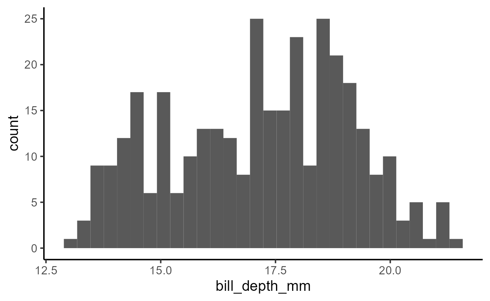
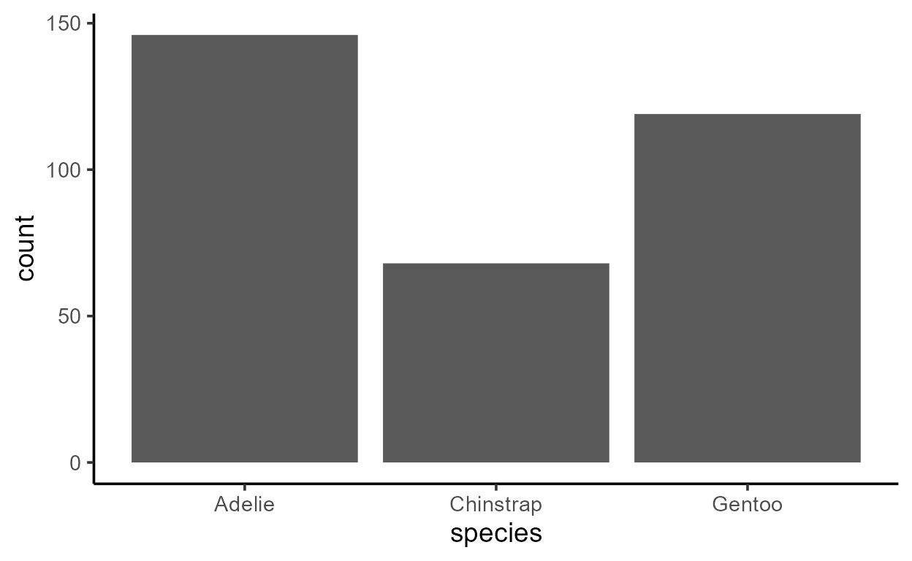
Despite only specifying a mapping to x, there is clearly
also a variable mapped to y in both plots above - a
variable called count.
We can infer that the count variable is computed by the
layer since it doesn’t exist in our raw data
penguins:
Which also means that if we try to use count in
aes() like we would any other column in our data, we get an
error:
Error in FUN(X[[i]], ...): object 'count' not foundBut we don’t just have to infer that count is
computed by the layer. We can see it from the output of a layer’s data
transformation pipeline, which we can get with
layer_data().1 Here, we pass
layer_data() our bar plot, which by default returns us the
data for the first layer:
p <- ggplot(penguins, aes(x = species)) +
geom_bar()
layer_data(p, i = 1L) # argument `i` specifies the layer index
y count prop x flipped_aes PANEL group ymin ymax xmin xmax colour fill
1 146 146 1 1 FALSE 1 1 0 146 0.55 1.45 NA grey35
2 68 68 1 2 FALSE 1 2 0 68 1.55 2.45 NA grey35
3 119 119 1 3 FALSE 1 3 0 119 2.55 3.45 NA grey35
size linetype alpha
1 0.5 1 NA
2 0.5 1 NA
3 0.5 1 NAThere’s a lot going on in this dataframe but pay attention to two things:
- There is a new column called
count - The
ycolumn is the same ascount
Both of these must happen for our plots above to have
count mapped to y.
But how does ggplot know to wait until count is
computed to map it to y?
after_stat()
The technical details of how and where count is
computed will be covered in the Part 2 of this
series. For now, all we need to know is that layers like
geom_bar() and geom_histogram() transforms the
raw data that it receives to derive new values like
count.
So here’s the big idea: to allow aesthetics to be mapped to
internally calculated variables like count, there must be a
way to delay some aesthetic mappings.
More specifically, when it comes to variables like
count, we need a way to reference it after
the statistical transformation has taken place
internally. As you might have guessed, we can do this with the
transparently-named function after_stat()! It takes one
argument x which is captured as an expression, to be
evaluated later.
So in our case, the fact that count is mapped to
y after the statistical transformation takes place
suggests that y is mapped to
after_stat(count). This is indeed the case, and we can make
this default mapping explicit in the aes():
ggplot(penguins, aes(species, y = after_stat(count))) +
geom_bar()

The expression inside after_stat() is evaluated in
what’s called a data-masked
context, much like in aes() or {dplyr}
verbs like mutate() and summarize(). This is
why you can just refer to count as if it were a variable
name and after_stat() will grab that column vector from the
transformed data.
But now we’re faced with another question: what is the
transformed data that after_stat() looks for variables
in? We know it’s a version of our original data, but what does
the output actually look like?
To help us answer this question I’m going to introduce a function
called inspect_after_stat(). I’ll leave the code here for
reproducibility purposes but it’s supposed to be a bit mysterious right
now, so don’t read too much into it!
inspect_after_stat
No dependency version:
#' Inspect a layer's data after computation by the Stat
#'
#' @param p A `ggplot` object
#' @param i An integer. The position of the layer's data to return.
#'
#' @return A dataframe
inspect_after_stat <- function(p, i = 1L) {
._env <- environment()
.out <- NULL
suppressMessages({
trace(
what = "ggplot_build.ggplot",
tracer = substitute(assign(".out", data[[i]], envir = ._env), ._env),
at = 19L,
print = FALSE,
where = asNamespace("ggplot2")
)
})
ggplot_build(p)
suppressMessages({
untrace("ggplot_build.ggplot", where = asNamespace("ggplot2"))
})
.out
}
Technical details:
inspect_after_stat() wraps around
base::trace(), a debugging function which can inject
expressions to be evaluated at a specific position of a function when it
is called. The function being traced is the S3 method
ggplot_build() as defined for class
<ggplot>. The function evaluates and logs the value
of data[[i]] at Step 19 of
ggplot_build.ggplot. This is the value of the
ith layer’s data right after the statistical transformation
happens in the preceding step, Step 18:
# https://github.com/tidyverse/ggplot2/blob/main/R/plot-build.r#L72
body(ggplot2:::ggplot_build.ggplot)[[18]]
data <- by_layer(function(l, d) l$compute_statistic(d, layout))Part 2 will explore what happens here in more detail.
If you’re interested in more functions like
inspect_after_stat() that allow you to interact with ggplot
internals, take a look at my package {ggtrace}!
# {ggtrace} version, not run
inspect_after_stat <- function(p, i = 1L) {
out <- ggtrace::ggtrace_inspect_vars(
x = p,
method = ggplot2:::ggplot_build.ggplot,
at = 19L,
vars = "data"
)
out[[1]][[i]]
}
We’ll use inspect_after_stat() to “peak inside” ggplot
internals and inspect the state of a layer’s data after the statistical
computation has taken place.
Let’s start with a simple example of geom_bar():
When we inspect the state of the data for the first (and only) layer of our plot after the statistical transformation, it looks like the following:
inspect_after_stat(p_bar)
count prop x width flipped_aes fill PANEL group
1 146 1 1 0.9 FALSE Adelie 1 1
2 68 1 2 0.9 FALSE Chinstrap 1 2
3 119 1 3 0.9 FALSE Gentoo 1 3At this stage, the data is collapsed such that each row contains information about one bar.
Notice how the statistical transformation done by
geom_bar() is basically just
dplyr::count():
# A tibble: 3 x 2
species n
<fct> <int>
1 Adelie 146
2 Chinstrap 68
3 Gentoo 119It’s {dplyr} all the way down!2
If we take the notion of delayed aesthetic evaluation seriously, then
all columns in the dataframe returned by
inspect_after_stat() should be accessible with
after_stat(). Indeed this is the case.
To demonstrate, I can map y to each variable in the
transformed data, converting to numeric as needed to conform to the
plot’s continuous y scale.
# Plots are printed left -> right and top -> bottom
# in order of `matrix(1:8, ncol = 2, byrow = TRUE)`
p_bar + aes(y = after_stat(count))
p_bar + aes(y = after_stat(prop))
p_bar + aes(y = after_stat(x))
p_bar + aes(y = after_stat(width))
p_bar + aes(y = after_stat(as.numeric(flipped_aes)))
p_bar + aes(y = after_stat(nchar(as.character(fill))))
p_bar + aes(y = after_stat(as.numeric(PANEL)))
p_bar + aes(y = after_stat(group))

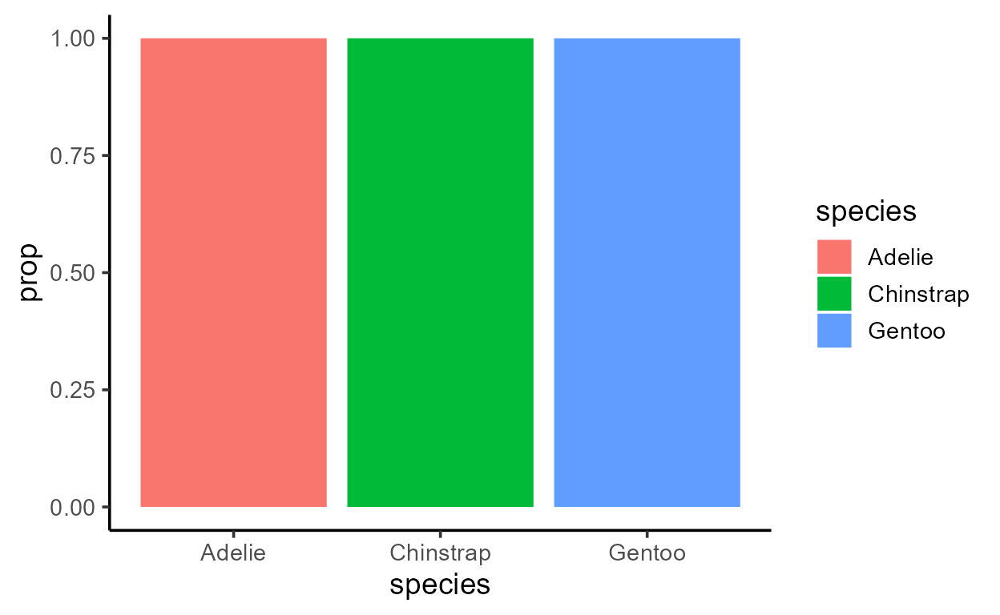
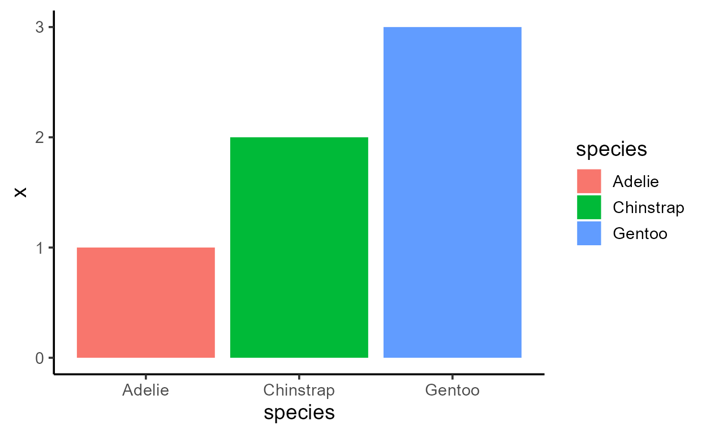
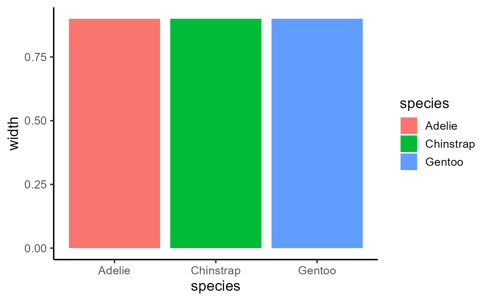
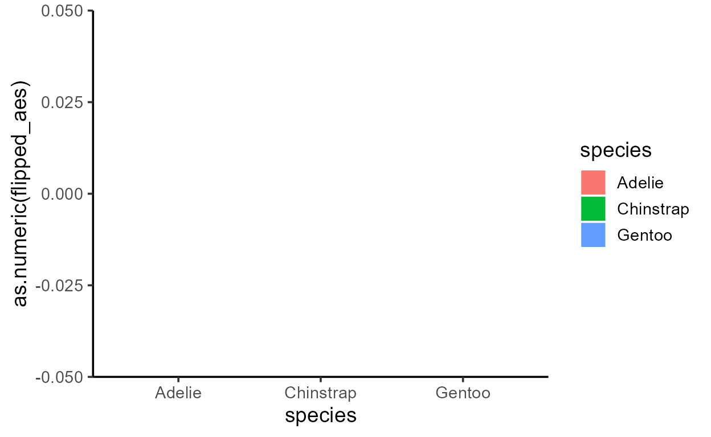
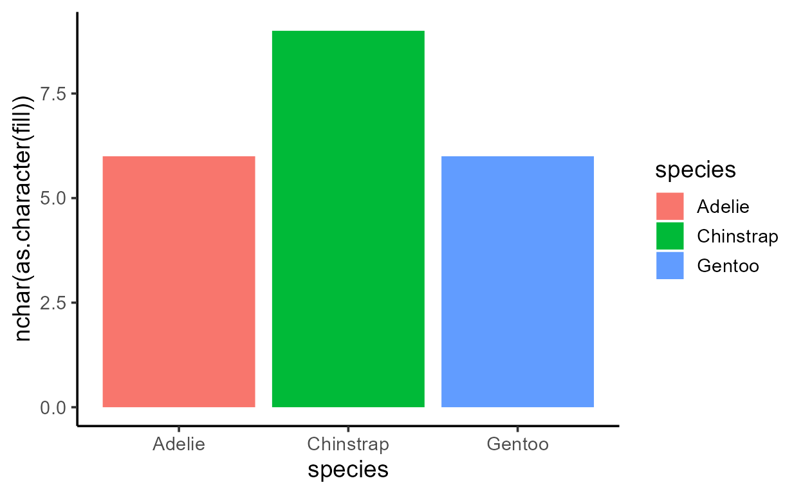
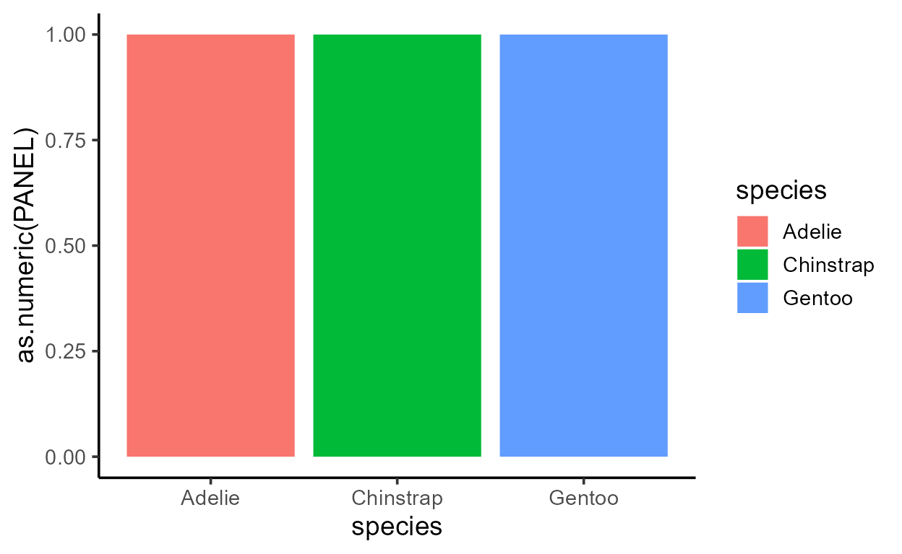
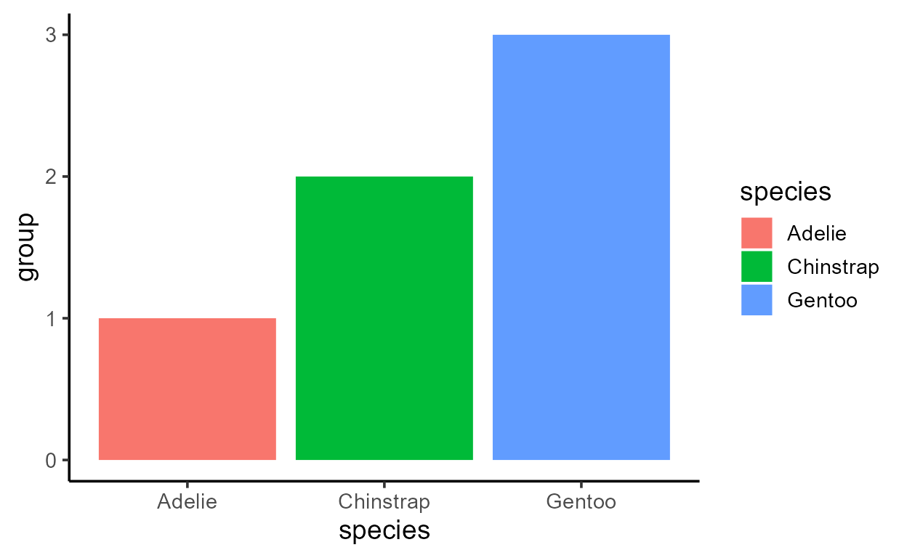
Before I get sacked, I should add that just because you can,
doesn’t mean you should! More specifically,
after_stat() should only really be used to access variables
computed from the stat stage like count
and prop (we’ll go over how to tell what variables are from
the stat stage in Part 2). The
stat transformation is just one of many transformations
that the data goes through to become drawing-ready, and so the state of
the “after stat” data also carries the output of other processes that
came before it like facet-ing and positional
scale transformations which we shouldn’t touch.
And in fact, many more transformations happen after the
stat stage as well, so it’s neither the first
nor the last thing to happen to the data. Using
layer_data() again, we see that the final form of the data
builds on our data from that we saw from the stat
stage:
layer_data(p_bar)
fill y count prop x flipped_aes PANEL group ymin ymax xmin xmax colour
1 #F8766D 146 146 1 1 FALSE 1 1 0 146 0.55 1.45 NA
2 #00BA38 68 68 1 2 FALSE 1 2 0 68 1.55 2.45 NA
3 #619CFF 119 119 1 3 FALSE 1 3 0 119 2.55 3.45 NA
size linetype alpha
1 0.5 1 NA
2 0.5 1 NA
3 0.5 1 NALastly, note that while additional variables in
layer_data() like size is technically
also from after the stat stage, they aren’t accessible
in the after_stat():
p_bar + aes(y = after_stat(size))
Error in after_stat(size): object 'size' not foundThis is because after_stat() references a
snapshot of the data right after the stat
transformation, which is the data we saw with
inspect_after_stat(), repeated below. Notice how the
size column is not yet present at this stage:
inspect_after_stat(p_bar)
count prop x width flipped_aes fill PANEL group
1 146 1 1 0.9 FALSE Adelie 1 1
2 68 1 2 0.9 FALSE Chinstrap 1 2
3 119 1 3 0.9 FALSE Gentoo 1 3Another practice with prop
Let’s look at another example of after_stat() to drive
the point home.
You might have noticed in the after stat data how the internally
computed prop column just has the value 1, which isn’t too
informative when we plot it:
ggplot(penguins, aes(species)) +
geom_bar(aes(y = after_stat(prop)))
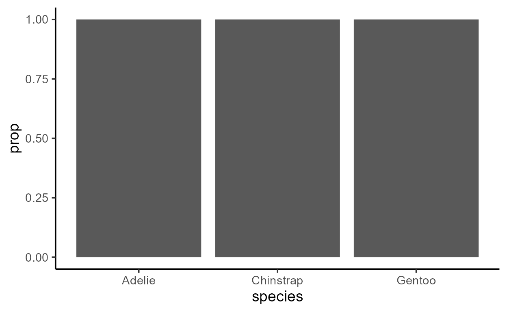
What is prop and when does it ever take on a different
value?
If you look at the documentation for geom_bar() under
the section “Computed variables”, you will see the following
descriptions for the two computed variables count and
prop:
- count: number of points in the bin
- prop: groupwise proportion
The value of prop was 1 for p_bar because
each bar was assigned a unique group as indicated by the values of the
group column, so of course the computation of
groupwise proportion was uninteresting!
If we want to change that, we’d need to explicitly specify a
group-ing that creates fewer groups than the number of bars
present.
In this example, we have geom_bar() make a bar for each
category of species as mapped to x, but
internally represent the three bars as belonging to one of two groups -
the “Adelie group” and the “not-Adelie group”:
p_bar_prop <- ggplot(penguins, aes(species)) +
geom_bar(
aes(
y = after_stat(prop),
group = species == "Adelie" # Assign the 3 bars into 2 groups
)
)
p_bar_prop
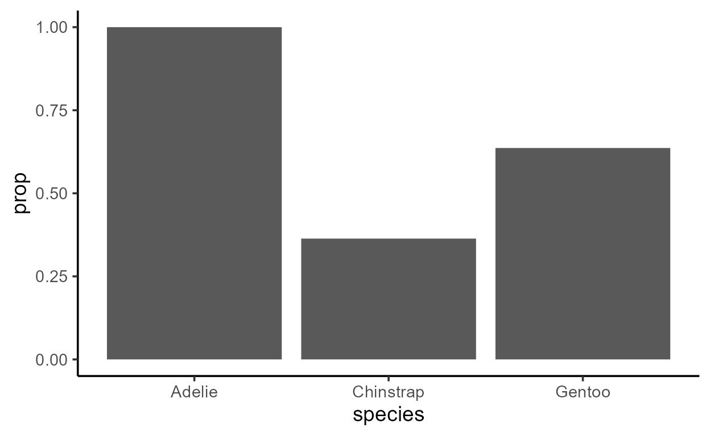
It doesn’t look like there are two groups underlyingly, but let’s see what happens when we inspect the data transformed by the Stat:
inspect_after_stat(p_bar_prop)
count prop x width flipped_aes group PANEL
1 68 0.3636364 2 0.9 FALSE 1 1
2 119 0.6363636 3 0.9 FALSE 1 1
3 146 1.0000000 1 0.9 FALSE 2 1We see only two groups (values of group are either 1 or
2), as we expect. And where two bars (rows) belong to the same group,
the values of prop add up to 1!
Our p_bar_prop has grey fill for all bars that make the
grouping structure visually ambiguous, but that was for expository
purposes only. If we wanted to fill the bars by group, we could do it in
at least two ways.
A hacky way that is 100% not recommended but possible is to mark the
groupings post-hoc, by grabbing the group variable in the
after_stat() and mapping that to something like
fill:
p_bar_prop +
aes(fill = after_stat(as.factor(group)))
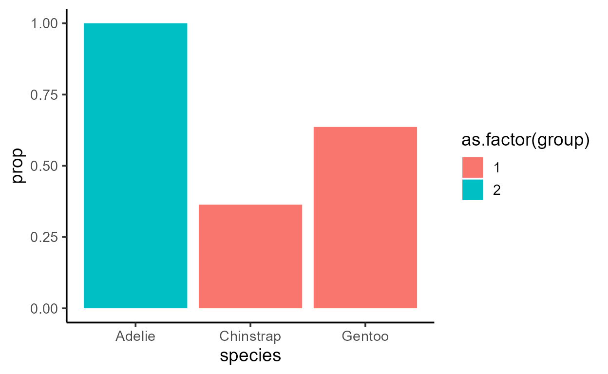
This is dangerous not only because it adds an unnecessary line after
geom_bar(), but also because it uses + aes()
to map an after_stat() variable globally. You
should avoid this because different layers do different statistical
transformations (we’ll discuss this shortly in the next section), and
that can lead to surprising behaviors like this:3
p_bar_prop +
aes(fill = after_stat(as.factor(group))) +
# This next line does something unexpected to the fill!
geom_label(aes(x = 2, y = 0.5, label = "Hello"), stat = "unique")
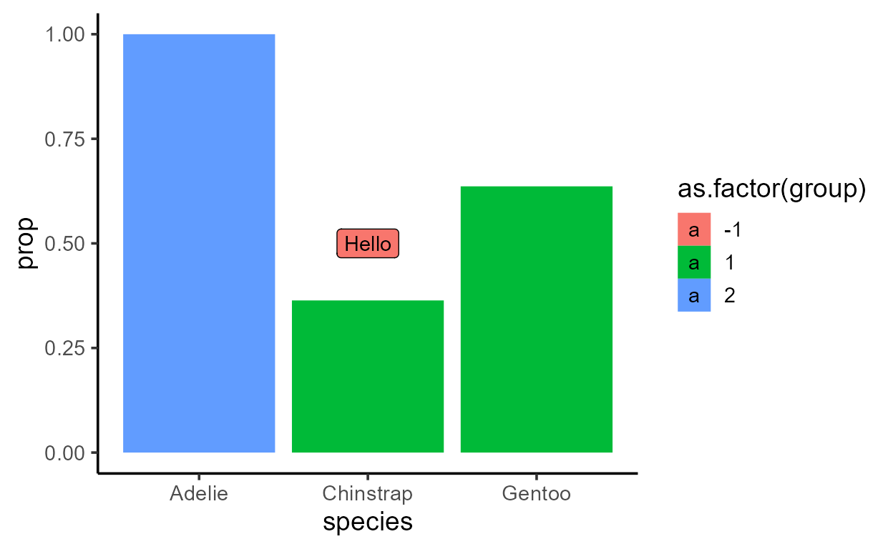
A safer, more principled way is to go back inside the
aes() for the bar layer and visually mark the underlying
grouping there:
p_bar_prop_group_fill <- ggplot(penguins, aes(species)) +
geom_bar(
aes(
y = after_stat(prop),
group = species == "Adelie",
fill = species == "Adelie" #< Here!
)
)
p_bar_prop_group_fill
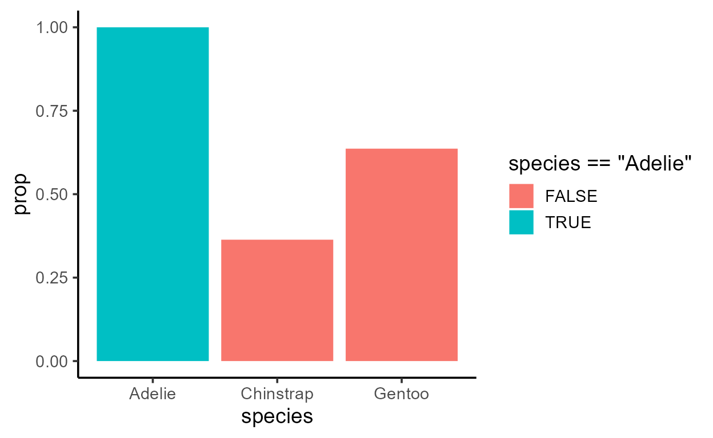
For a quick experiment, note what happens if you only map
species == "Adelie" to fill:
p_bar_prop_only_fill <- ggplot(penguins, aes(species)) +
geom_bar(
aes(
y = after_stat(prop),
# group = species == "Adelie",
fill = species == "Adelie"
)
)
p_bar_prop_only_fill
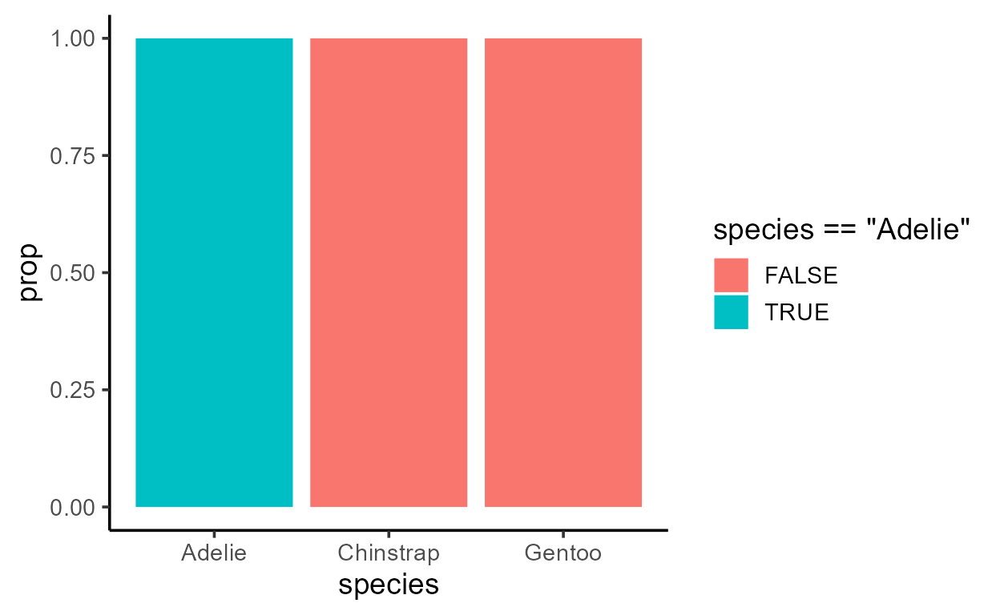
As you might have guessed, we get a different plot because the
underlying grouping structure is different. See how this does not change
the value of count (absolute) but does change the value of
prop (relative):4
# 2 groups present
inspect_after_stat(p_bar_prop_group_fill)
count prop x width flipped_aes fill group PANEL
1 68 0.3636364 2 0.9 FALSE FALSE 1 1
2 119 0.6363636 3 0.9 FALSE FALSE 1 1
3 146 1.0000000 1 0.9 FALSE TRUE 2 1# 3 groups present
inspect_after_stat(p_bar_prop_only_fill)
count prop x width flipped_aes fill PANEL group
1 68 1 2 0.9 FALSE FALSE 1 1
2 119 1 3 0.9 FALSE FALSE 1 2
3 146 1 1 0.9 FALSE TRUE 1 3Let’s conclude this section by putting the issue of practicality back on the table.
The most common usecase for prop is to use it in
conjunction with something like group = 15 to
“normalize” the y-scale within each facet. This is useful when the data
has unbalanced samples across panels but you want to emphasize the
relative distribution of categories in the x-axis within each
panel:
# Absolute value `count` mapped to `y`
ggplot(penguins, aes(species)) +
geom_bar(aes(y = after_stat(count))) +
facet_grid(~ island, scales = "free_x", space = "free")
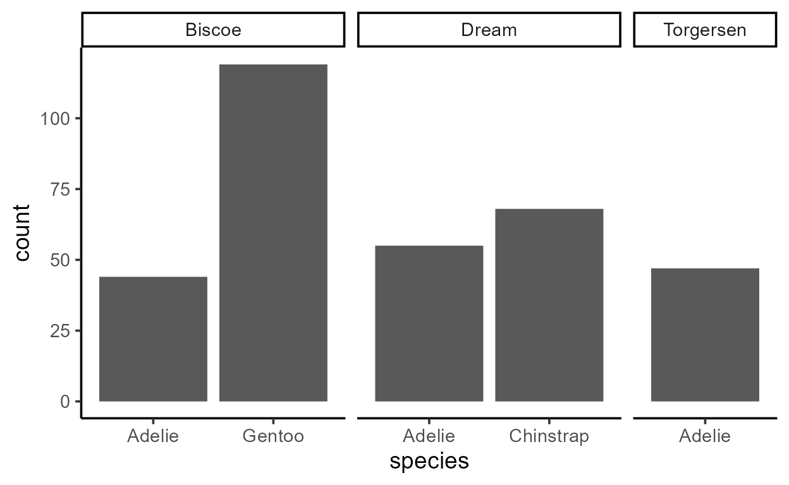
# Relative value `prop` mapped to `y`
ggplot(penguins, aes(species)) +
geom_bar(aes(y = after_stat(prop), group = 1)) +
facet_grid(~ island, scales = "free_x", space = "free")
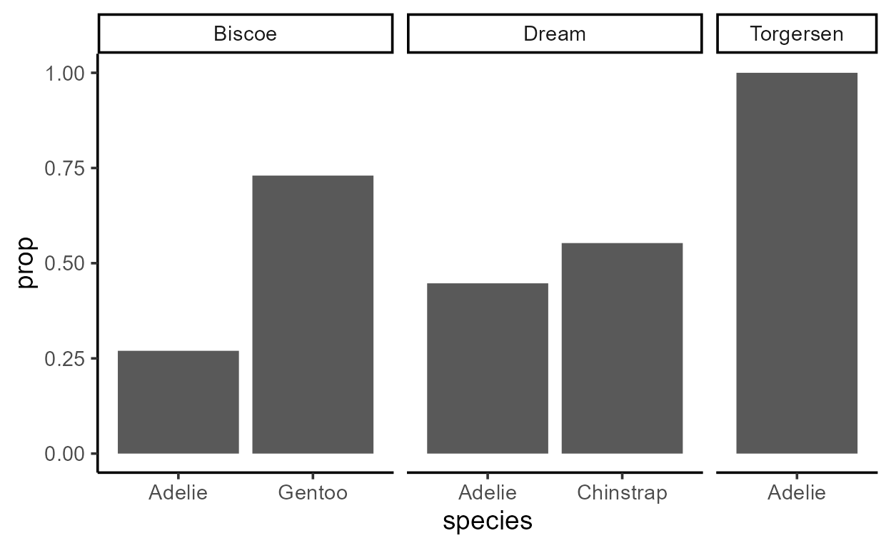
We see that aes(group = 1) had the effect of making sure
that prop adds up to 1 within each facet because
all bars in a panel share the same group.6
Baby steps to the Stat ggproto
Same geom, different stats
One thing that you might have noticed throughout this exercise is
that it’s not transparent from the name geom_bar() that
this layer is going to compute internal variables like
count and prop and use a default y-aesthetic
of after_stat(count).
This is responsible for one of the most enduring points of confusion
in ggplot: the difference between geom_col() and
geom_bar().
Whether you call the rectangle a “column” or a “bar” sounds like silly semantics, so why do they behave so differently?
Error in `check_required_aesthetics()`:
! geom_col requires the following missing aesthetics: y Error in `f()`:
! stat_count() can only have an x or y aesthetic.You get a small hint in the error message for the
geom_bar() example - it complains that
stat_count() can only have an x or y aesthetic.
But we’ve never said anything about stat_count() - all
we have is a layer for geom_bar()!
Well it turns out that geom_bar() and
stat_count() are two sides of the same coin. Both these
functions return a layer that has a “bar” geom
a “count” stat.7
geom_bar()
geom_bar: width = NULL, na.rm = FALSE, orientation = NA
stat_count: width = NULL, na.rm = FALSE, orientation = NA
position_stack geom_bar: na.rm = FALSE, orientation = NA, width = NULL
stat_count: na.rm = FALSE, orientation = NA, width = NULL
position_stackWith that in mind, let’s return to the code for our penguin species bar plot:

We’ve said that geom_bar(), by default, has a mapping of
aes(y = after_stat(count)), so let’s make that explicit
again:
ggplot(penguins, aes(species)) +
geom_bar(
aes(y = after_stat(count))
)
And as we just saw, geom_bar() also uses a “count” stat
by default, so let’s make that explicit as well:
ggplot(penguins, aes(species)) +
geom_bar(
aes(y = after_stat(count)),
stat = "count"
)
Hopefully the pieces are starting to come together: the
computation of the internal variable count isn’t about the
“bar” geom - it’s about the “count” stat.
So geom_col() errors with after_stat(count)
not because it’s drawing something different (it’s not!),
it’s just calculating something different. In more technical
terms, geom_col() doesn’t use stat = "count"
like geom_bar() does. It uses
stat = "identity" instead, which does an “identity”
transformation on the data (i.e., leaves it alone):
geom_col()
geom_col: width = NULL, na.rm = FALSE
stat_identity: na.rm = FALSE
position_stackTherefore, no new variables get calculated inside
geom_col(). In fact, the data before and after the
statistical transformation look nearly identical:
# A tibble: 3 x 2
species n
<fct> <int>
1 Adelie 146
2 Chinstrap 68
3 Gentoo 119 x y PANEL group
1 1 146 1 1
2 2 68 1 2
3 3 119 1 3What’s more, by overriding the stat, you can make
geom_bar() behave like geom_col():
x y PANEL group
1 1 146 1 1
2 2 68 1 2
3 3 119 1 3In sum, the variables that are available in the
after_stat() is determined by what kind of
stat a layer uses. And as we just saw, even if a layer is
called a geom_*() it still has a stat. In
fact, every layer has a stat and a geom, even though
the functions that generate these layers have names like
stat_*() and geom_*().
It should be noted that the choice of a default stat for
geom_*() layers can range from more transparent
(like the pairing of geom = "smooth" and
stat = "smooth" in geom/stat_smooth()) to
less transparent (like
geom_col(stat = "identity")). But it’s also worth keeping
in mind that all defaults are carefully curated by the developers to
improve user experience.8
Same stat, different geoms
If all layers have a stat and a geom, and if geom_*()
layers have default stats, then stat_*() layers must also
have defaults geoms.
Indeed, this is the case. Remember the stat_count()
layer from the error message earlier? Because it uses the “count”
stat and has a default geom of “bar”,
it works like geom_bar() right out of the box:
ggplot(penguins, aes(species)) +
stat_count()

And here are the defaults of stat_count() spelled
out:
ggplot(penguins, aes(species)) +
stat_count(
aes(y = after_stat(count)), # default mapping to `y`
geom = "bar" # default `geom`
)
You might be wondering: why are there two ways of doing the same thing? Some people think its a design mistake but I appreciate the option because it can improve readability.
For example, we talked about how we can supply a different
stat to a geom_*() layer like
geom_bar(stat = "identity"). Actually, we can
override the default geom/stat for any layer as long as we
satisfy the required set of aesthetic mappings for that
layer.
This allows us to do some nifty things like setting the
stat of geom_text() to “count”, and then
mapping the internally computed variable count to the
y and label aesthetics to show the number of
counts at the top of each bar:
ggplot(penguins, aes(species)) +
geom_bar() +
geom_text(
aes(y = after_stat(count), label = after_stat(count)),
stat = "count", vjust = -.4 # little vertical nudging with `vjust`
)

But notice that you can do the same with two calls to
stat_count():
ggplot(penguins, aes(species)) +
stat_count(geom = "bar") +
stat_count(
aes(label = after_stat(count)),
geom = "text", vjust = -.4
)
I personally like the second style using stat_count()
for two reasons:
When I read
stat_count(), I know going in that the variablecountis going to be available in theafter_stat()for that layer, so I’m not surprised to seelabel = after_stat(count)in theaes()of the text layer.It makes the code tell a coherent story - the theme of this plot is about visualizing counts, and what gets drawn to visualize counts is secondary to that overarching goal. This happens to also aligns pretty well with my actual data viz thought process.
Which do you prefer?
Sneak peak of Part 2
I’ve tried my best to split up this topic of delayed aesthetic evaluation to keep it more manageable, so hopefully this wasn’t too overwhelming!
Part 2 will pick up where we left off by exploring
when, where, and how the data actually
undergoes the statistical transformation. We will do a lot more of
“peaking inside” the internals similar to what we did with our custom
function inspect_after_stat(), except we will use functions
from my package {ggtrace}
to interact with ggplots internals. It’s a package partly designed as a
pedagogical tool for folks in early stages of the user-to-developer
transition, and I’m very excited to showcase its potentials!
One last note: Part 2 will introduce the ggproto
system which powers ggplot internals. It’s notoriously difficult to
grasp, and has a big learning curve even if you’re an experienced
user of ggplot. But fear not, because we already got a little
taste of ggproto! Remember how we were just passing strings to the
geom and stat arguments of layer functions?
Well that was actually just a shorthand for specifying ggproto objects
like StatCount and GeomBar:
We will talk more about these ggproto objects, especially
Stat ggprotos like StatCount.
Session Info
R version 4.1.1 (2021-08-10)
Platform: x86_64-w64-mingw32/x64 (64-bit)
Running under: Windows 10 x64 (build 19044)
Matrix products: default
locale:
[1] LC_COLLATE=English_United States.1252
[2] LC_CTYPE=English_United States.1252
[3] LC_MONETARY=English_United States.1252
[4] LC_NUMERIC=C
[5] LC_TIME=English_United States.1252
attached base packages:
[1] stats graphics grDevices utils datasets methods base
other attached packages:
[1] dplyr_1.0.8 ggplot2_3.3.5
loaded via a namespace (and not attached):
[1] highr_0.8 pillar_1.6.4 bslib_0.3.1
[4] compiler_4.1.1 jquerylib_0.1.4 tools_4.1.1
[7] digest_0.6.28 downlit_0.4.0 jsonlite_1.7.2
[10] evaluate_0.14 memoise_2.0.0 lifecycle_1.0.1
[13] tibble_3.1.6 gtable_0.3.0 pkgconfig_2.0.3
[16] rlang_1.0.2 DBI_1.1.2 cli_3.1.1
[19] rstudioapi_0.13 distill_1.3 yaml_2.2.1
[22] xfun_0.29 fastmap_1.1.0 withr_2.4.2
[25] stringr_1.4.0 knitr_1.37 generics_0.1.0
[28] vctrs_0.3.8 sass_0.4.0 systemfonts_1.0.3
[31] tidyselect_1.1.1 grid_4.1.1 glue_1.6.1
[34] R6_2.5.1 textshaping_0.3.6 fansi_1.0.2
[37] rmarkdown_2.11 farver_2.1.0 purrr_0.3.4
[40] magrittr_2.0.1 palmerpenguins_0.1.0 scales_1.1.1
[43] htmltools_0.5.2 ellipsis_0.3.2 assertthat_0.2.1
[46] colorspace_2.0-2 labeling_0.4.2 ragg_1.2.0
[49] utf8_1.2.2 stringi_1.7.5 munsell_0.5.0
[52] cachem_1.0.1 crayon_1.4.2Footnotes
I introduce
layer_data()in a previous blog post on stat layers↩︎Okay, not quite all the way down because you still have to make and draw graphical objects that actually make up the figure, but this is a substantial part of the internals and you get the point.↩︎
The label geom, by virtue of not having any groupings specified, is assigned a group value of -1 (see
ggplot2:::NO_GROUP). This introduces another group category to the pre-existing groups 1 and 2 created by the bar layer, and so this has consequences for when the fill scale steps in to derive values offillfrom the levels ofgroup. ↩︎Note also how
groupappears in different column positions. Whengroupis explicitly supplied, it appears to the left ofPANEL, and whengroupis derived it appears to the right ofPANEL. Where and how does this happen? I’ll leave this question as an exercise (hint: look atLayer$compute_aestheticsandggplot2:::add_group()). ↩︎You can replace
1with any length-1 value - the point is to just not create any groupings.↩︎Why not across facets? That’s a good question and has to do with how by-panel and by-group computations are done inside ggplot. We’ll look at this more in detail in Part 2!↩︎
As well as a “stack” position, but we won’t go into that in this blog post series.↩︎
Don’t you appreciate how you can just use
geom_histogram()to draw a histogram without having to think aboutstat = "bin"every time?↩︎
Citation
@online{choe2022,
author = {Choe, June},
title = {Demystifying Delayed Aesthetic Evaluation: {Part} 1},
date = {2022-03-17},
url = {https://yjunechoe.github.io/posts/2022-03-10-ggplot2-delayed-aes-1/},
langid = {en}
}